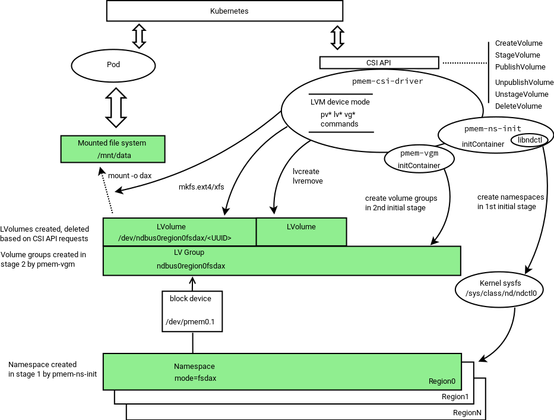

Design and architecture
Architecture and Operation
The PMEM-CSI driver can operate in two different device modes: LVM and direct. This table contains an overview and comparison of those modes. There is a more detailed explanation in the following paragraphs.
LVM |
direct |
|
|---|---|---|
| Main advantage | avoids free space fragmentation1 | simpler, somewhat faster, but free space may get fragmented1 |
| What is served | LVM logical volume | pmem block device |
| Region affinity2 | yes: one LVM volume group is created per region, and a volume has to be in one volume group | yes: namespace can belong to one region only |
| Startup | two extra stages: pmem-ns-init (creates namespaces), vgm (creates volume groups) | no extra steps at startup |
| Namespace modes | fsdax mode3 namespaces pre-created as pools |
namespace in fsdax mode created directly, no need to pre-create pools |
| Limiting space usage | can leave part of device unused during pools creation | no limits, creates namespaces on device until runs out of space |
| Name field in namespace | Name gets set to 'pmem-csi' to achieve own vs. foreign marking | Name gets set to VolumeID, without attempting own vs. foreign marking |
| Minimum volume size | 4 MB | 1 GB (see also alignment adjustment below) |
| Alignment requirements | LVM creation aligns size up to next 4MB boundary | driver aligns size up to next alignment boundary. The default alignment step is 1 GB. Device(s) in interleaved mode will require larger minimum as size has to be at least one alignment step. The possibly bigger alignment step is calculated as interleave-set-size multiplied by 1 GB |
1 Free space fragmentation is a problem when there appears to be enough free capacity for a new namespace, but there isn’t a contiguous region big enough to allocate it. The PMEM-CSI driver is only capable of allocating continguous memory to a namespace and cannot de-fragment or combine smaller blocks. For example, this could happen when you create a 63 GB namespace, followed by a 1 GB namespace, and then delete the 63 GB namespace. Eventhough there is 127 GB available, the driver cannot create a namespace larger than 64 GB.
---------------------------------------------------------------------
| 63 GB free | 1GB used | 64 GB free |
---------------------------------------------------------------------
2 Region affinity means that all parts of a provisioned file system are physically located on device(s) that belong to same PMEM region. This is important on multi-socket systems where media access time may vary based on where the storage device(s) are physically attached.
3 fsdax mode is required for NVDIMM
namespaces. See Persistent Memory
Programming for
details. devdax mode is not supported. Though a
raw block volume would be useful when a filesystem isn’t needed, Kubernetes
cannot handle binding a character device to a loop device.
LVM device mode
In Logical Volume Management (LVM) mode the PMEM-CSI driver uses LVM for logical volume Management to avoid the risk of fragmentation. The LVM logical volumes are served to satisfy API requests. There is one volume group created per region, ensuring the region-affinity of served volumes.

The driver consists of three separate binaries that form two initialization stages and a third API-serving stage.
During startup, the driver scans persistent memory for regions and
namespaces, and tries to create more namespaces using all or part
(selectable via option) of the remaining available space. This first
stage is performed by a separate entity pmem-ns-init.
The second stage of initialization arranges physical volumes provided
by namespaces into LVM volume groups. This is performed by a separate
binary pmem-vgm.
After two initialization stages, the third binary pmem-csi-driver
starts serving CSI API requests.
Namespace modes in LVM device mode
The PMEM-CSI driver pre-creates namespaces in fsdax mode forming
the corresponding LVM volume group. The amount of space to be
used is determined using the option -useforfsdax given to pmem-ns-init.
This options specifies an integer presenting limit as percentage.
The default value is useforfsdax=100.
Using limited amount of total space in LVM device mode
The PMEM-CSI driver can leave space on devices for others, and
recognize “own” namespaces. Leaving space for others can be achieved
by specifying lower-than-100 value to -useforfsdax options
The distinction “own” vs. “foreign” is
implemented by setting the Name field in namespace to a static
string “pmem-csi” during namespace creation. When adding physical
volumes to volume groups, only those physical volumes that are based on
namespaces with the name “pmem-csi” are considered.
Direct device mode
The following diagram illustrates the operation in Direct device mode:

In direct device mode PMEM-CSI driver allocates namespaces directly from the storage device. This creates device space fragmentation risk, but reduces complexity and run-time overhead by avoiding additional device mapping layer. Direct mode also ensures the region-affinity of served volumes, because provisioned volume can belong to one region only.
In Direct mode, the two preparation stages used in LVM mode, are not needed.
Namespace modes in direct device mode
The PMEM-CSI driver creates a namespace directly in the mode which is asked by volume creation request, thus bypassing the complexity of pre-allocated pools that are used in LVM device mode.
Using limited amount of total space in direct device mode
In direct device mode, the driver does not attempt to limit space use. It also does not mark “own” namespaces. The Name field of a namespace gets value of the VolumeID.
Kata Containers support
Kata Containers runs applications inside a virtual machine. This poses a problem for App Direct mode, because access to the filesystem prepared by PMEM-CSI is provided inside the virtual machine by the 9p or virtio-fs filesystems. Both do not support App Direct mode:
9p does not support
mmapat all.virtio-fs only supports it when not using
MAP_SYNC, i.e. without dax semantic.
This gets solved as follows:
PMEM-CSI creates a volume as usual, either in direct mode or LVM mode.
Inside that volume it sets up an ext4 or xfs filesystem.
Inside that filesystem it creates a
pmem-csi-vm.imgfile that contains partition tables, dax metadata and a partition that takes up most of the space available in the volume.That partition is bound to a
/dev/loopdevice and the formatted with the requested filesystem type for the volume.When an application needs access to the volume, PMEM-CSI mounts that
/dev/loopdevice.An application not running under Kata Containers then uses that filesystem normally but due to limitations in the Linux kernel, mounting might have to be done without
-odaxand thus App Direct access does not work.When the Kata Containers runtime is asked to provide access to that filesystem, it will instead pass the underlying
pmem-csi-vm.imgfile into QEMU as a nvdimm device and inside the VM mount the/dev/pmem0p1partition that the Linux kernel sets up based on the dax meta data that was placed in the file by PMEM-CSI. Inside the VM, the App Direct semantic is fully supported.
Such volumes can be used with full dax semantic only inside Kata Containers. They are still usable with other runtimes, just not with dax semantic. Because of that and the additional space overhead, Kata Containers support has to be enabled explicitly via a storage class parameter and Kata Containers must be set up appropriately.
Driver modes
The PMEM-CSI driver supports running in different modes, which can be controlled by passing one of the below options to the driver’s ‘-mode’ command line option. In each mode, it starts a different set of open source Remote Procedure Call (gRPC) servers on given driver endpoint(s).
Controller should run as a single instance in cluster level. When the driver is running in Controller mode, it forwards the pmem volume create/delete requests to the registered node controller servers running on the worker node. In this mode, the driver starts the following gRPC servers:
One Node instance should run on each worker node that has persistent memory devices installed. When the driver starts in such mode, it registers with the Controller driver running on a given -registryEndpoint. In this mode, the driver starts the following servers:
Driver Components
Identity Server
This gRPC server operates on a given endpoint in all driver modes and implements the CSI Identity interface.
Node Registry Server
When the PMEM-CSI driver runs in Controller mode, it starts a gRPC server on a given endpoint(-registryEndpoint) and serves the RegistryServer interface. The driver(s) running in Node mode can register themselves with node specific information such as node id, NodeControllerServer endpoint, and their available persistent memory capacity.
Master Controller Server
This gRPC server is started by the PMEM-CSI driver running in Controller mode and serves the Controller interface defined by the CSI specification. The server responds to CreateVolume(), DeleteVolume(), ControllerPublishVolume(), ControllerUnpublishVolume(), and ListVolumes() calls coming from external-provisioner() and external-attacher() sidecars. It forwards the publish and unpublish volume requests to the appropriate Node controller server running on a worker node that was registered with the driver.
Node Controller Server
This gRPC server is started by the PMEM-CSI driver running in Node mode and implements the ControllerPublishVolume and ControllerUnpublishVolume methods of the Controller service interface defined by the CSI specification. It serves the ControllerPublishVolume() and ControllerUnpublish() requests coming from the Master controller server and creates/deletes persistent memory devices.
Node Server
This gRPC server is started by the driver running in Node mode and implements the Node service interface defined in the CSI specification. It serves the NodeStageVolume(), NodeUnstageVolume(), NodePublishVolume(), and NodeUnpublishVolume() requests coming from the Container Orchestrator (CO).
Communication between components
The following diagram illustrates the communication channels between driver components:

Security
All PMEM-CSI specific communication shown in above section between Master Controller(RegistryServer, MasterControllerServer) and NodeControllers(NodeControllerServer) is protected by mutual TLS. Both client and server must identify themselves and the certificate they present must be trusted. The common name in each certificate is used to identify the different components. The following common names have a special meaning:
pmem-registryis used by the RegistryServer.pmem-node-controlleris used by NodeControllerServers
The test/setup-ca.sh
script shows how to generate self-signed certificates. The test cluster is set
up using certificates created by that script, with secrets prepared by
test/setup-deployment.sh before
deploying the driver using the provided deployment files.
Beware that these are just examples. Administrators of a cluster must ensure that they choose key lengths and algorithms of sufficient strength for their purposes and manage certificate distribution.
A production deployment can improve upon that by using some other key delivery mechanism, like for example Vault.
Volume Persistency
In a typical CSI deployment, volumes are provided by a storage backend that is independent of a particular node. When a node goes offline, the volume can be mounted elsewhere. But PMEM volumes are local to node and thus can only be used on the node where they were created. This means the applications using PMEM volume cannot freely move between nodes. This limitation needs to be considered when designing and deploying applications that are to use local storage.
These are the volume persistency models considered for implementation in PMEM-CSI to serve different application use cases:
Persistent volumes
A volume gets created independently of the application, on some node where there is enough free space. Applications using such a volume are then forced to run on that node and cannot run when the node is down. Data is retained until the volume gets deleted.Ephemeral volumes
Each time an application starts to run on a node, a new volume is created for it on that node. When the application stops, the volume is deleted. The volume cannot be shared with other applications. Data on this volume is retained only while the application runs.Cache volumes
Volumes are pre-created on a certain set of nodes, each with its own local data. Applications are started on those nodes and then get to use the volume on their node. Data persists across application restarts. This is useful when the data is only cached information that can be discarded and reconstructed at any time and the application can reuse existing local data when restarting.
| Volume | Kubernetes | PMEM-CSI | Limitations |
|---|---|---|---|
| Persistent | supported | supported | topology aware scheduling1 |
| Ephemeral | supported2 | supported | resource constraints3 |
| Cache | supported | supported | topology aware scheduling1 |
1 Topology aware scheduling ensures that an application runs on a node where the volume was created. For CSI-based drivers like PMEM-CSI, Kubernetes >= 1.13 is needed. On older Kubernetes releases, pods must be scheduled manually onto the right node(s).
2 CSI ephemeral volumes feature support is alpha in Kubernetes v1.15, and beta in v1.16.
3 The upstream design for ephemeral volumes currently does not take resource constraints into account. If an application gets scheduled onto a node and then creating the ephemeral volume on that node fails, the application on the node cannot start until resources become available.
See exposing persistent and cache volumes for configuration information.
Capacity-aware pod scheduling
PMEM-CSI implements the CSI GetCapacity call, but Kubernetes
currently doesn’t call that and schedules pods onto nodes without
being aware of available storage capacity on the nodes. The effect is
that pods using volumes with late binding may get tentatively assigned
to a node and then get stuck because that decision is not reconsidered
when the volume cannot be created there (a
bug). Even if
that decision is reconsidered, the same node may get selected again
because Kubernetes does not get informed about the insufficient
storage. Pods with ephemeral inline volumes always get stuck because
the decision to use the node is final.
Work is under way to enhance scheduling in Kubernetes. In the meantime, PMEM-CSI provides two components that help with pod scheduling:
Scheduler extender
When a pod requests the special extended
resource
called pmem-csi.intel.com/scheduler, the Kubernetes scheduler calls
a scheduler
extender
provided by PMEM-CSI with a list of nodes that a pod might run
on. This extender is implemented in the master controller and thus can
connect to the controller on each of these nodes to check for
capacity. PMEM-CSI then filters out all nodes which currently do not
have enough storage left for the volumes that still need to be
created. This considers inline ephemeral volumes and all unbound
volumes, regardless whether they use late binding or immediate
binding.
This special scheduling can be requested manually by adding this snippet to one container in the pod spec:
containers:
- name: some-container
...
resources:
limits:
pmem-csi.intel.com/scheduler: "1"
requests:
pmem-csi.intel.com/scheduler: "1"
This scheduler extender is optional and not necessarily installed in all clusters that have PMEM-CSI. Don’t add this extended resource unless the scheduler extender is installed, otherwise the pod won’t start!
See our implementation of a scheduler extender.
Pod admission webhook
Having to add pmem-csi.intel.com/scheduler manually is not
user-friendly. To simplify this, PMEM-CSI provides a mutating
admission
webhook
which intercepts the creation of all pods. If that pod uses inline
ephemeral volumes or volumes with late binding that are provided by
PMEM-CSI, the webhook transparently adds the extended resource
request. PMEM-CSI volumes with immediate binding are ignored because
for those the normal topology support ensures that unsuitable nodes
are filtered out.
The webhook can only do that if the persistent volume claim (PVC) and its storage class have been created already. This is normally not required: it’s okay to create the pod first, then later add the PVC. The pod simply won’t start in the meantime.
The webhook deals with this uncertainty by allowing the creation of the pod without adding the extended resource when it lacks the necessary information. The alternative would be to reject the pod, but that would be a change of behavior of the cluster that may affect also pods that don’t use PMEM-CSI at all.
Users must take care to create PVCs first, then the pods if they want to use the webhook. In practice, that is often already done because it is more natural, so it is not a big limitation.
PMEM-CSI Operator
PMEM-CSI operator facilitates deploying and managing the PMEM-CSI driver on a Kubernetes cluster. This operator is based on the CoreOS operator-sdk tools and APIs.
The driver deployment is controlled by a cluster-scoped custom resource
named Deployment in the
pmem-csi.intel.com/v1alpha1 API group. The operator runs inside the cluster
and listens for deployment changes. It makes sure that the required Kubernetes
objects are created for a driver deployment.
Refer to Deployment CRD for details.